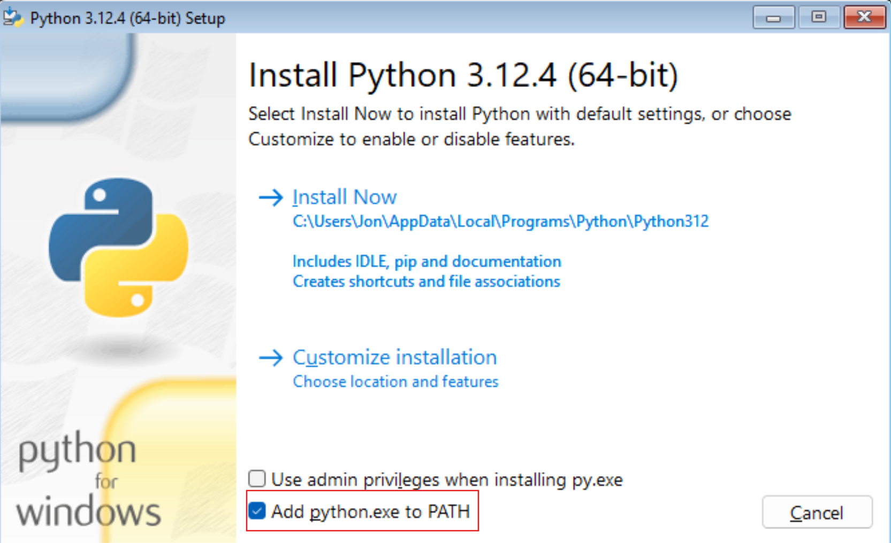

# If the devtools package is not already installed, please run the disabled line below.
# install.packages("devtools")
devtools::install_github("tsimonato/gtapssp")GTAPSSP: SSPs for GTAP Framework
1 Introduction
This tutorial demonstrates the utilization of the gtapssp package in R for data processing. It covers various steps such as reading, transforming, and analyzing data, making it suitable for both beginners and advanced users.
The package provides optimized and user-friendly functions to download SSP data, interpolate data using spline and beers methods. The gtapssp functions is accompanied by detailed manual, you can also access this manual by running ?gtapssp in the R console or pressing F1 on the function name in RStudio.
2 Installation
To use the gtapssp package, it’s necessary to have R installed on your computer, which can be downloaded from here. Additionally, we recommend downloading RStudio, available at here, which provides a user-friendly interface to work with R.
R install details
R is a versatile programming language, with a focus on statistical computing. It is a big part of academic research in the social sciences. R is free and open-source and runs on Windows, Mac OS X, and Linux.
- Download the R installer from the Comprehensive R Archive Network (CRAN)
- Choose the appropriate installer for your operating system and computer architecture (32-bit or 64-bit).
- If on Mac, you will need to know if you are using an Intel or Apple Silicon (M1) processor.
Run the installer and follow the instructions.
We recommend install R Tools. Many of the packages we will be using in this course require R Tools to be installed.
If you are on Windows:
Download the latest version of the software from the R Tools for Windows page.
Run the installer and follow the instructions.
If you are on Mac:
First, install the Xcode Command Line Tools. Go to the R Tools for Mac page and follow the instructions. Note: the precise instructions will vary according to the version of macOS you are using.
Install the gfortran compiler, as also indicated on the R Tools for Mac page.
Python install details
Important
Python installation is only required if you plan to download updated or custom datasets SSPs from the IIASA The gtapssp package includes a built-in default dataset, so installing Python is optional unless you wish to access the latest or alternative datasets from IIASA’s API (developed in Python).
Python is a general-purpose programming language that is becoming increasingly popular in the social sciences. It is free and open-source and runs on Windows, Mac OS X, and Linux.
Download Python from the Python Software Foundation.
Run the installer and make sure to check the box that says “Add Python to PATH” before clicking on “Install Now”.

IDE install details
We recommend RStudio as IDE for R.
RStudio is by far the most popular IDE used by R programmers. It is free and open-source and comes with a console and syntax-highlighting editor that supports direct code execution, as well as tools for plotting, history, debugging, and workspace management.
Alternative: If you are already familiar with Visual Studio Code (VS Code), say because you have already used it for Python, you can also use it for R programming. You will need to do a bit of configuration to get it to work, though. If you choose to use VS Code, download and install the R Extension for Visual Studio Code and remember to follow the instructions on the Getting Started section of the extension page.
You can install the development version of gtapssp from GitHub with:
3 One-Line Workflow
If you’d like to execute the entire pipeline described in this tutorial with minimal effort, you can use the gtapssp::iiasa_gtap() function. This function runs all steps, including data aggregation, interpolation, expansion, label merging, and optional file exports.
Here’s an example:
# Run the entire pipeline and save the output as a .HAR file
gtapssp::iiasa_gtap(outFile = "gtap_ssp.har")
# Or save as a .CSV file
gtapssp::iiasa_gtap(outFile = "gtap_ssp.csv")
# To simply process the data without saving it
final_data <- gtapssp::iiasa_gtap()This function provides flexibility to either save the output in .har or .csv formats or return the processed dataset for further use in R.
4 Workflow Overview
The standard pipeline involves the steps below. There are Optional Steps to update input data via API, which are detailed in a separate section. These steps allow for dynamically retrieving and updating specific datasets before initiating the pipeline.
graph TD
subgraph s1["Step 1"]
R4[IIASA raw data] --> D[Summarise Data]
R5[Regional correspondences] --> D[Summarise Data: gtapssp::aggData]
D([Summarise Data])
D --> E1([Interpolate GDP data: gtapssp::interpolate_spline])
D --> E2([Interpolate POP data: gtapssp::interpolate_beers])
end
subgraph s2["Step 2"]
E1 --> F([Expand data])
E2 --> F
end
subgraph s3["Step 3"]
F --> G([Join labels])
end
subgraph s4["Step 4"]
G --> H([Cleaning data])
end
subgraph s5["Step 5"]
H --> I([Preparing final output to export])
end
I --> K([.har file for GTAP])
5 Data Source
The pipeline uses projections from the Shared Socioeconomic Pathways (SSPs) developed by IIASA (version 3.0.1, March 2024). These projections include GDP and Population data and are publicly available under a license allowing reuse by other research communities. For more details, visit the official IIASA SSP database.
Below is a preview of the default IIASA dataset used in the gtapssp package. This dataset can be updated with the gtapssp::updateData function if newer data or custom updates are required.
gtapssp::iiasa_raw$data6 Step 1: Preprocessing and Aggregation
Aggregate the raw data using gtapssp::aggData. This function groups the dataset by specified columns and sums the values within each group, ensuring compatibility with the GTAP regional structure.
# Define grouping columns
group_cols <- c("model", "scenario", "reg_iso3", "variable", "unit")
# Aggregate raw data
agg_iiasa <- gtapssp::aggData(
iiasa_raw = gtapssp::iiasa_raw,
group_cols = group_cols
)
# Funcion documentation:
?gtapssp::aggDataMissing values in the dataset are interpolated using two methods:
Spline Interpolation: Smoothly fills gaps for GDP and related variables using cubic splines. By default, the function uses the "fmm" method (default) for interpolation. Users can modify interpolation parameters for custom behavior. Check the function documentation for details.
# Interpolate with spline method
spline_out <- agg_iiasa |>
tidyr::drop_na(model) |>
dplyr::filter(model %in% c("IIASA GDP 2023", "OECD ENV-Growth 2023")) |>
gtapssp::interpolate_spline(
groups = group_cols,
year = "year",
values = "value"
)
# Funcion documentation:
?gtapssp::interpolate_splineBeers Interpolation: Specially designed for demographic data, This function applies the Beers interpolation algorithm, which is particularly suited for age-cohort data. The default "ordinary" method preserves population totals while distributing values evenly across age groups. Additional parameters can be adjusted as needed; refer to the function documentation for more information.
# Interpolate with beers method
beers_out <- agg_iiasa |>
dplyr::filter(model %in% c("IIASA-WiC POP 2023")) |>
dplyr::filter(!grepl("^Mean Years of Education", variable)) |>
gtapssp::interpolate_beers(
groups = group_cols,
year = "year",
values = "value"
)
# Split the "variable" column into multiple columns using the delimiter "|".
# This transformation helps to break down the information in "variable" into separate components.
# The new columns will be: "variable", "gender_code", "cohort", and "education_level".
beers_out <- beers_out |>
tidyr::separate_wider_delim(
cols = "variable", # <1> Specify the column to be split.
names = c("variable", "gender_code", "cohort", "education_level"), # <2> Define the new column names.
delim = "|", # <3> Use "|" as the delimiter to separate values in the "variable" column.
too_few = "align_start" # <4> Align the resulting values from the split to the start of the new columns if there are fewer parts than columns.
)
# Funcion documentation:
?gtapssp::interpolate_beersThe outputs from the Beers Interpolation (Population data) and Spline Interpolation (GDP data) are concatenated vertically into a single dataset.
# Combine the outputs of GDP and Population data
gtap_ssp <- dplyr::bind_rows(beers_out, spline_out)7 Step 2: Expanding data
The “Historical Reference” labels in the scenario dimension are renamed to match the SSP categories (e.g., SSP1, SSP2, …, SSP5). This step ensures that the elements in the scenario dimension are aligned, enabling the creation of a continuous time series by scenario.
# Expand scenarios
exp_hist <- gtap_ssp |>
dplyr::filter(scenario == "Historical Reference") |>
dplyr::select(-scenario) |>
tidyr::expand_grid(scenario = unique(gtap_ssp$scenario))
# Merge expanded scenarios
gtap_ssp <- gtap_ssp |>
dplyr::anti_join(dplyr::select(exp_hist, -value)) |>
dplyr::bind_rows(exp_hist) |>
dplyr::filter(scenario != "Historical Reference")To ensure completeness to be able to export to a ’.har” file, expand the dataset to include all combinations of scenarios, regions, and years.
# Extract unique combinations of columns excluding 'scenario', 'reg_iso3', 'year', and 'value'.
# These columns are assumed to represent unique group identifiers for the dataset.
unique_groups <- gtap_ssp |>
dplyr::select(-c(scenario, reg_iso3, year, value)) |>
dplyr::distinct() # Retain only distinct rows to define unique group combinations.
# Expand the dataset to include all possible combinations of unique groups with regions, years, and scenarios.
complete_data <- unique_groups |>
tidyr::expand_grid(reg_iso3 = unique(gtapssp::corresp_reg$reg_iso3)) |> # Add all unique region ISO codes.
tidyr::expand_grid(year = unique(gtap_ssp$year)) |># Add all unique years in the dataset.
tidyr::expand_grid(scenario = unique(gtap_ssp$scenario))# Add all unique SSP scenarios.
# Ensure that all combinations of groups, regions, years, and scenarios exist in the final dataset.
# Any missing combinations will be filled with default values.
gtap_ssp <- complete_data |>
dplyr::left_join(
gtap_ssp,
by = c(names(unique_groups), "scenario", "reg_iso3", "year") # Merge by all relevant keys.
) |>
dplyr::mutate(value = tidyr::replace_na(value, 0)) # Replace any missing values in the 'value' column with 0.8 Step 3: Joining labels
This step integrates additional labels by merging auxiliary datasets with the main dataset. It uses ISO codes, educational levels, cohort categories, and gender information. The default label correspondences included in the package are shown below. They can be modified with external sources if needed.
gtapssp::educDictgtapssp::cohortDictgtapssp::genderDict# Merge the auxiliary datasets with the main dataset (gtap_ssp)
gtap_ssp <-
gtap_ssp |>
# Integrate educational level labels
dplyr::left_join(gtapssp::educDict, by = dplyr::join_by(education_level)) |>
# Integrate cohort labels
dplyr::left_join(gtapssp::cohortDict, by = dplyr::join_by(cohort)) |>
# Integrate gender labels
dplyr::left_join(gtapssp::genderDict, by = dplyr::join_by(gender_code))9 Step 4: Cleaning labels
In this step, the dataset is refined to improve consistency and clarity. Column names are renamed to standardized 3 characters labels. Missing values in gender and age are replaced with “TOTL” (representing Total). The variable column for GDP is reclassified, such as converting “GDP|PPP” to “GDP_PPP.” Additionally, the values for GDP (PPP) are adjusted by scaling them by 1000 to reflect the correct units.
gtap_ssp <-
gtap_ssp |>
dplyr::mutate(
MOD = model, # Rename 'model' to 'MOD'
VAR = variable, # Rename 'variable' to 'VAR'
SCE = scenario, # Rename 'scenario' to 'SCE'
ISO = reg_iso3, # Rename 'reg_iso3' to 'ISO'
GND = gender, # Rename 'gender' to 'GND'
AGE = age, # Rename 'age' to 'AGE'
YRS = paste0("Y", year), # Add "Y" prefix to 'year'
POP = value, # Rename 'value' to 'POP'
.keep = "none" # Keep only the newly defined variables
)
gtap_ssp <-
gtap_ssp |>
dplyr::mutate(
GND = tidyr::replace_na(GND, "TOTL"), # Replace NA in gender with "TOTL" (Total)
AGE = tidyr::replace_na(AGE, "TOTL") # Replace NA in age with "TOTL" (Total)
)
gtap_ssp <- gtap_ssp |>
# Modify and transform existing variables using dplyr::mutate
dplyr::mutate(
# Reclassify the values of the 'variable' column into a new variable 'VAR'
VAR = dplyr::case_when(
VAR == "GDP|PPP" ~ "GDP_PPP", # Replace "GDP|PPP" with "GDP_PPP"
VAR == "GDP|PPP [per capita]" ~ "GDP_PER_CAPI", # Replace "GDP|PPP [per capita]" with "GDP_PER_CAPI"
TRUE ~ VAR # Retain the original values for all other cases
),
# Adjust the values in the 'value' column for GDP_PPP by multiplying by 1000
POP = ifelse(
VAR == "GDP_PPP", # Check if the 'VAR' column equals "GDP_PPP"
POP * 1000, # Multiply the value by 1000 to adjust the unit for absolute values
POP # Keep the value unchanged for other cases
)
)10 Step 5: Preparing Final Output Data for Export
In this step, data is processed into three separate components: population (POP), GDP projections (GDPI), and GDP from the OECD ENV-Growth dataset (GDPO). These datasets are then formatted as arrays and saved to a .har file for further use in GTAP modeling.
# Prepare population (POP) dataset
POP <- gtap_ssp |>
dplyr::filter(MOD == "IIASA-WiC POP 2023") |> # Select population model
dplyr::filter(GND != "TOTL") |> # Exclude total gender records
dplyr::group_by(SCE, ISO, GND, YRS, AGE) |> # Group by scenario, ISO, gender, year, and age
dplyr::summarise(POP = sum(POP, na.rm = T)) # Sum population values, handling missing data
# Prepare GDP projections (GDPI)
GDPI <- gtap_ssp |>
tidyr::complete(MOD, VAR, SCE, ISO, YRS, fill = list(POP = 0)) |> # Ensure all combinations exist with default values
dplyr::filter(MOD == "IIASA GDP 2023") |> # Select IIASA GDP projections model
dplyr::filter(VAR != "Population") |> # Exclude population variables
dplyr::group_by(VAR, SCE, ISO, YRS) |> # Group by variable, scenario, ISO, and year
dplyr::summarise(GDPI = sum(POP, na.rm = T)) # Sum GDP values, handling missing data
# Prepare GDP from OECD ENV-Growth dataset (GDPO)
GDPO <- gtap_ssp |>
dplyr::filter(MOD == "OECD ENV-Growth 2023") |> # Select GDP from OECD ENV-Growth dataset
dplyr::group_by(VAR, SCE, ISO, YRS) |> # Group by variable, scenario, ISO, and year
dplyr::summarise(GDPO = sum(POP, na.rm = T)) # Sum GDP values, handling missing data10.0.1 Convert to Arrays and Add Descriptions
The processed datasets (POP, GDPI, and GDPO) are converted into arrays, rearranged to 5 dimensions and labeled with descriptive attributes. These arrays are required for saving into .har format.
# Combine datasets into arrays
data <- list(
POP = array(
POP |> dplyr::pull(POP), # Extract population values
dim = rev(sapply(POP |> dplyr::select(-POP), function(x) length(unique(x)))), # Define dimensions
dimnames = rev(lapply(POP |> dplyr::select(-POP), function(x) unique(x))) # Define dimension names
) |> aperm(rev(1:(length(POP) - 1))), # Adjust dimension order
GDPI = array(
GDPI |> dplyr::pull(GDPI), # Extract GDP values (IIASA)
dim = rev(sapply(GDPI |> dplyr::select(-GDPI), function(x) length(unique(x)))), # Define dimensions
dimnames = rev(lapply(GDPI |> dplyr::select(-GDPI), function(x) unique(x))) # Define dimension names
) |> aperm(rev(1:(length(GDPI) - 1))), # Adjust dimension order
GDPO = array(
GDPO |> dplyr::pull(GDPO), # Extract GDP values (OECD)
dim = rev(sapply(GDPO |> dplyr::select(-GDPO), function(x) length(unique(x)))), # Define dimensions
dimnames = rev(lapply(GDPO |> dplyr::select(-GDPO), function(x) unique(x))) # Define dimension names
) |> aperm(rev(1:(length(GDPO) - 1))) # Adjust dimension order
)
# Add descriptive metadata to arrays
attr(data$POP, "description") <- "IIASA-WiC POP 2023 (million people)" # Population description
attr(data$GDPI, "description") <- "IIASA GDP 2023 (USD_2017/yr)" # GDP projections description
attr(data$GDPO, "description") <- "OECD ENV-Growth 2023 (USD_2017/yr)" # OECD GDP description10.1 Export to .har File
Save the prepared data arrays into a .har file using the HARr::write_har function.
# Export datasets to a .har file
HARr::write_har(data, "gtap_ssp.har")11 Optional: Update input data
The gtapssp::updateData function allows users to download and process the latest version of the SSPs dataset from the IIASA database. This step is optional and should be used if you want to replace the default SSP dataset included in the gtapssp package (gtapssp::iiasa_raw) with a newer version. The updated data is processed using Python’s pyam package and may take several minutes depending on the database size. For more details on the pyam package and its integration with R, visit here.
graph TD
subgraph sO["Optional Steps"]
A[IIASA data API] --> B([Update Data: gtapssp::updateData])
B --> R1[IIASA raw data]
R2[IIASA raw data] --> C([Create Regional Mappings: gtapssp::updateCorresp])
R7[Custom regional correspondences] --> C
C --> R3[New Regional correspondences]
end
To execute the functionality of updating data through the IIASA API, the reticulate R package is used as a bridge between the IIASA API (developed in Python) and the R interface. However, it is essential to have Python installed on the machine where the code will run. Additionally, the full path to the python.exe executable must be provided to the gtapssp::updateData() function, so R can access the installed Python interpreter.
# Ensure Python is installed on your machine
# Configure the path to the python.exe executable
pythonExePath <- "C:\\Users\\<username>\\AppData\\Local\\Programs\\Python\\Python312\\python.exe"
# Use the gtapssp::updateData function to download and process updated data from IIASA
iiasa_raw <- gtapssp::updateData(
pythonExePath = pythonExePath,
outputFile = "data/iiasa_raw.rda" # Location to save the processed file
)
# Funcion documentation:
?gtapssp::updateDataYou can also use the gtapssp::updateCorresp function to apply custom regional mappings, allowing flexibility to aggregate the dataset according to your specific requirements.
# Update regional correspondences
gtapssp::updateCorresp(
iiasa_raw = iiasa_raw, # or gtapssp::iiasa_raw for use default input data
corresp_reg = gtapssp::corresp_reg # or a custom vector of regional correspondences
)
# Funcion documentation:
?gtapssp::updateCorrespThe default regional mapping included in the package is displayed below. This mapping aggregates the data to 251 regions using reg_iso3 as the reference. However, it could be aggregated to the 160 GTAP regions by using the reg_gtap_code column to agreggate instead of reg_iso3.
gtapssp::corresp_reg[, c("reg_iso3", "cty_names", "reg_gtap_code")]::::::